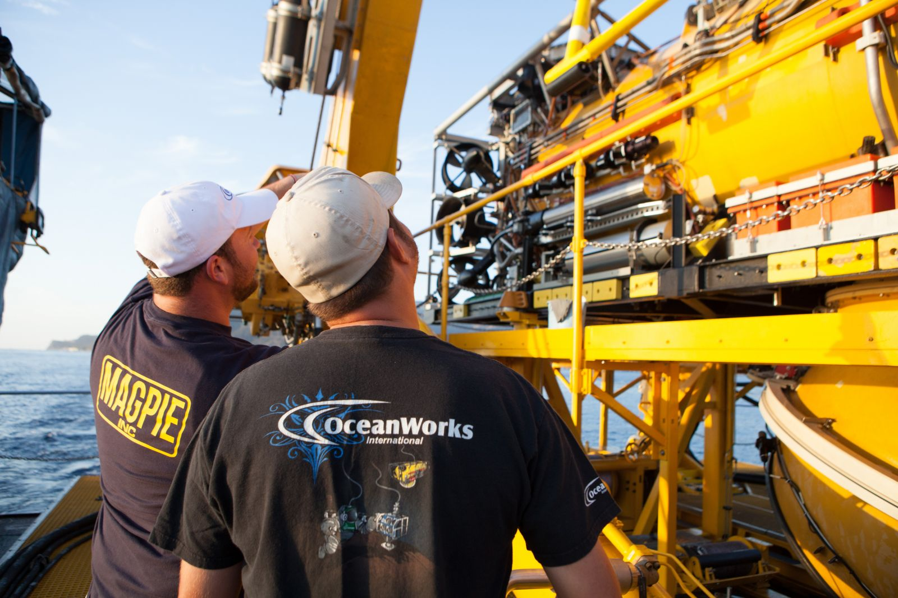
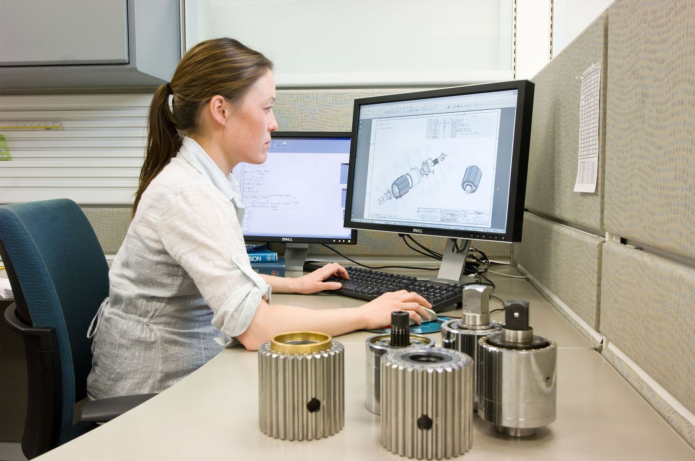
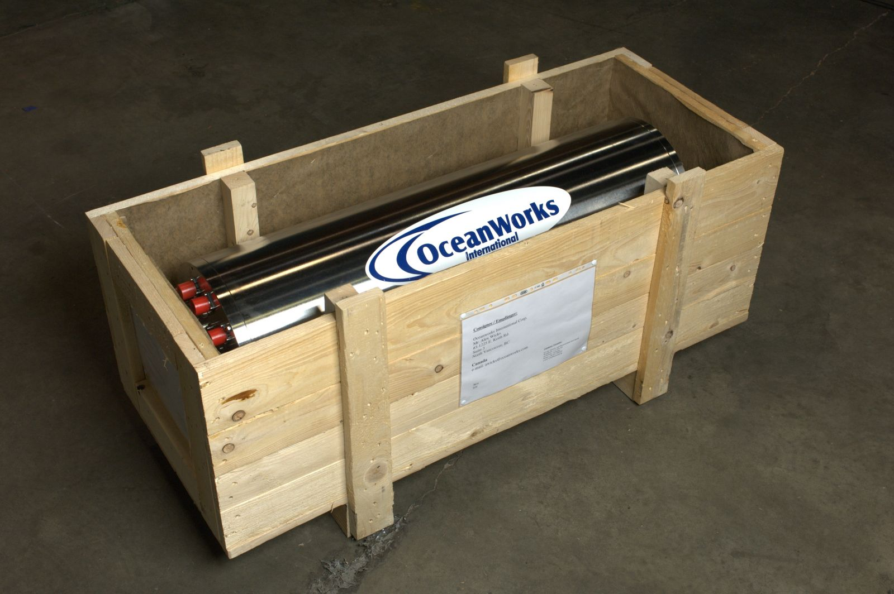
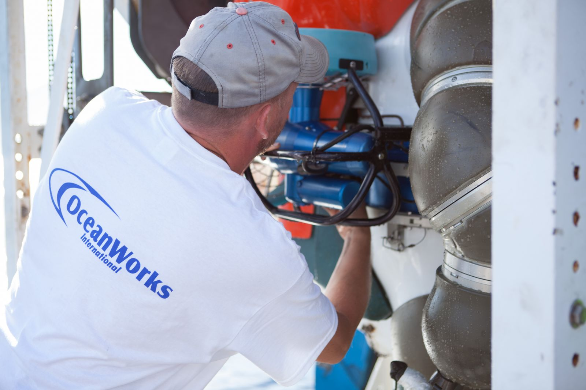
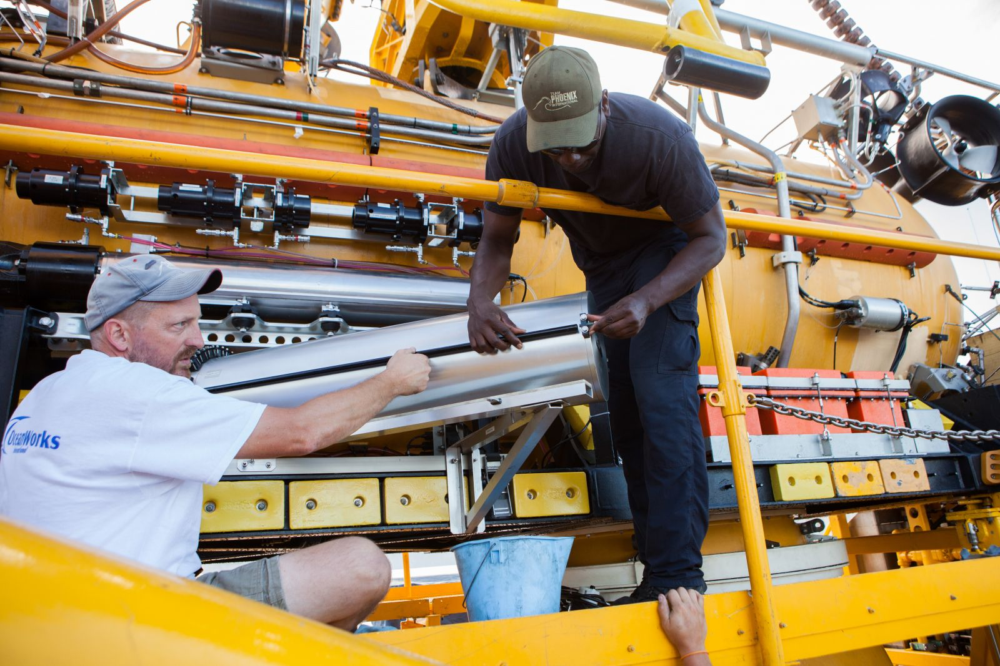

Canada: +1 604 398 4998
Integrated Logistics Support

Along with our hardware and system delivery, OceanWorks International provides comprehensive through-life Integrated Logistics Support (ILS) which includes support and test equipment provision, technical data / publications management, computer resources support and facilities planning.
OceanWorks also offers a variety of support service options to ensure smooth operation and operational availability by working as a team with our customers. The following services and support are available:
Reliability & Maintainability Engineering

OceanWorks has design engineering and production engineering groups involved in all system design and build projects. System reliability and maintainability are factored into the designs. Formal analysis, testing and validation are included as appropriate.
Preventive, Predictive and Corrective Maintenance Planning
In addition to operational manuals, all products are provided with complete preventative and corrective maintenance plans and procedures to keep systems functioning at optimal levels. System technical support is provided by our 24hr a day, 7 days a week manned Product Support help line.
Spare Parts Supply Support
All OceanWorks systems include recommended operations and depot level spares lists. All spares are supported by our Product Support group.
Packaging, Handling, Storage & Transportation (PHST)

OceanWorks’ PHST procedures ensure that all equipment and support items are properly preserved, packaged, labeled, handled, transported and stored to meet both short-term and long-term requirements. This includes hazardous material packaging for transport, material safety data sheet (MSDS) provision, expiry date notification and markings, customs and export notification document preparation, environmental impact assessment, constraints and more to make sure that each customer is properly supplied and informed of all PHST issues.
Obsolescence Management
Obsolescence Management is provided through monitoring availability of spares and components. Notifications are provided to customers through regular technical service bulletins and product updates to ensure that system through-life support is maintained.
Maintenance Support

OceanWorks maintains a 24hr a day, 7 day a week technical support service that can draw on both our Product Support Engineers and Technicians to respond to inquiries from customers. We can provide remote electronic or on-site support as required. It is recommended that OceanWorks be on-site during major maintenance cycles or re-certification of equipment. OceanWorks also provides contract maintenance support to customers at customer bases or in the field to support operations on a full or part time basis, upon request.
Training
Classroom, in-water and at sea formal training to accredited international standards is available for all product lines. Training can be undertaken at our regional or home base facilities or on-site at the customer’s facility as required. Courses are offered for supervisors, operators and/or technicians and are tailored to customer personnel requirements and personnel experience. We also offer courses to train qualified customer personnel to train their own staff.
Operations Support

OceanWorks can provide contract operations support personnel, Technicians, Engineers and Project Managers to customers at their bases or in the field to support operations on a fulltime or part time basis upon request. This is recommended to be done during the early stages after new equipment acquisition to help ensure that integration of the OceanWorks hardware on a customer's vessel and the operation of that hardware is conducted in a safe and efficient manner. Our operations personnel can combine actual operations support with initial and ongoing on-the-job training, providing an efficient ramp up of customer capabilities and experience offshore.
Operations support options include:
- Contractor Owned, Contractor Operated (COCO)
- Government Owned, Contractor Operated (GOCO)
- Government Owned, Contractor Maintained (GOCM)
For more information please contact: sales@oceanworks.com